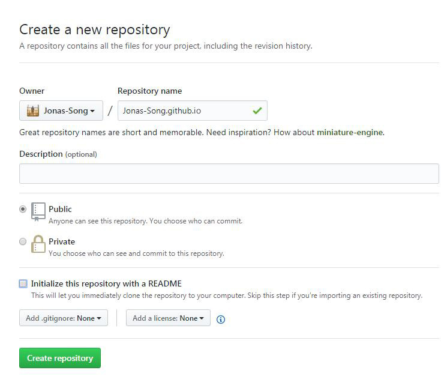

Hexo & GitHub Pages 搭建免费个人博客
一直想搞个博客，又不想买域名空间那么麻烦，这两天就研究了下，用 Hexo+GitHub Pages 做了这个免费博客，Hexo是基于Node.js的快速、简洁且高效的一个博客框架，上手后真心喜欢它。
思路：
1.首先要使用 GitHub Pages ，必须要有 github 账号；如何注册安装 Git.
2.Hexo 是基于 Node.js 的，所以必须安装 Node.js；如何安装 Node.js.
接下来具体看看Hexo的安装及Git的配置。
安装 Hexo
当 Node.js 和 Git 都安装好后就可以正式安装 Hexo 了，终端执行如下命令：1
$ npm install hexo-cli -g
查看是否安装成功，终端输入$ hexo -v,如果显示 hexo-cli: 1.1.0等数据，则已安装成功。
接下来我们本地新建博客目录。
创建本地 Hexo 博客
初始化
如在本地D盘新建 blog 文件夹
终端 cd 你本地新建的博客目录下（如$ cd blog），执行命令：1
$ hexo init
安装依赖：1
$ npm install
生成静态页
1 | $ hexo g |
启动本地服务器
1 | $ hexo s |
默认情况下，访问： http://localhost:4000/ 就可看到如下：
关联 Github
我们已经有了本地博客，想放到 GitHub 上还需要一个能托管这些资料的线上仓库。
创建仓库
登录你的 Github 帐号，新建仓库，名为：用户名.github.io固定写法。

部署前配置
仓库新建好后，打开/e/blog/_config.yml进行配置，往下滑到最后，修改成下边的样子：
1 | deploy: |
你需要将 repository 后 Jonas-Song 换成你自己的用户名。
部署到 GitHub
现在 cd 到 blog 目录下，执行 hexo 命令：1
$ hexo g -d
解释：静态文件生成后立即部署网站
若你未关联 Github，则执行完 hexo 命令时终端会提示你输入 Github 的用户名和密码，即1
2Username for 'https://github.com':
Password for 'https://github.com':
命令执行成功后，浏览器中打开网址 https://jonas-song.github.io/ （将 jonas-song 换成你的用户名）能看到和本地 http://localhost:4000 时一样的页面。
发布文章
终端 cd 至 blog 目录下，执行 hexo 命令：1
$ hexo new "post name"
名为 postName.md 的文件会建在目录/blog/source/_posts下
文章编辑完成后，终端 cd 至 blog 目录下，执行如下命令来发布:1
$ hexo g -d
这样一篇文章就已经发布成功了，打开网站刷新查看吧。
安装主题
你可以到 Hexo 官网主题页去找自己喜欢的主题。这里以 hexo-theme-next 为例
终端 cd 至 blog 目录下，执行如下命令:1
$ git clone https://github.com/iissnan/hexo-theme-next themes/next
修改 blog/_config.yml 里 theme 的名称 landscape 修改为 next
终端 cd 至 blog 目录下，执行如下命令:1
2$ hexo clean 清除缓存
$ hexo g -d 生成静态页面，部署到 GitHub
OK,打开博客查看效果吧，theme 具体配置可以看相应的 theme 文档。
总结
刚开始用 Hexo 搭建这个博客遇到不少坑，这里简单分享总结后的一些思路，希望可以帮到你。文章里提到的 git,node.js,hexo,github pages 等如果了解不多或者想深入学习，可以去其官网查看详细文档。